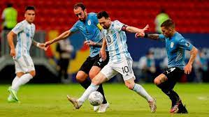

Conmebol
Watch Live

Neymar Jr
Neymar da Silva Santos Júnior, known as Neymar, is a Brazilian professional footballer who plays for Paris Saint-Germain and the Brazil.

Lionel Messi
Lionel Andrés Messi is an Argentine professional footballer who plays as a forward or an attacking midfielder the Argentina national team.

Cristiano Ronaldo
Cristiano Ronaldo dos Santos Aveiro GOIH ComM is a Portuguese professional footballer who plays as a forward for Serie A club Juventus.

Paulo Dybala
Paulo Exequiel Dybala is an Argentine professional footballer who plays as a forward for Serie A club Juventus and the Argentina.

Mesut Ozil
Mesut Özil is a German professional footballer who plays as an attacking midfielder for Süper Lig club Fenerbahçe. "The Assist King".

Mauro Icardi
Mauro Emanuel Icardi is an Argentine professional footballer who plays Paris Saint-Germain and the Argentina national team.

Di Maria
Ángel Fabián Di María is an Argentine professional footballer who plays for Ligue 1 club Paris Saint-Germain and the Argentina

Kylian Mbappé
Kylian Mbappé Lottin is a French professional footballer who plays as a forward for Ligue 1 club Paris Saint-Germain and the France.

Mohamed Salah
Mohamed Salah Hamed is captains the Egypt national team who plays for Premier League Liverpool.

Harry Kane
Harry Edward Kane footballer who plays as a striker for Premier League club Tottenham and captains the England national team.

Kevin De Bruyne
Kevin De Bruyne is a Belgian professional footballer who plays as a midfielder for Premier League club Manchester City.

Philippe Coutinho
Philippe Coutinho is a Brazilian footballer who plays as an attacking midfielder or winger for Spanish club Barcelona and the Brazil national.
All Highlights
Copa America 2021
Amet minim mollit non deserunt ullamco est sit aliqua dolor do amet sint. Velit officia consequat duis enim velit mollit. Exercitation veniam consequat sunt nostrud amet.
Watch Live
